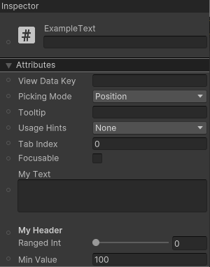
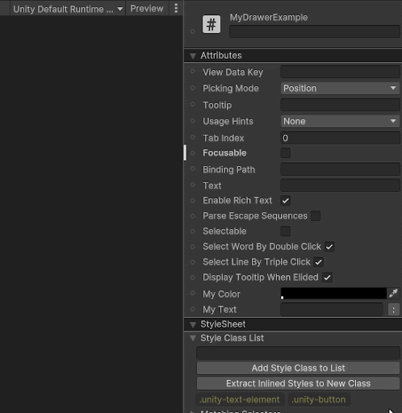

Declares that a field or property is associated with a UXML attribute.
Convenience overload, shorthand for Query<T>.Build().First().
You can use the UxmlAttribute attribute to declare that a property or field is associated with a UXML attribute.
When an element is marked with the UxmlElement attribute, a corresponding UxmlSerializedData class is
generated in the partial class.
This data class contains a SerializeField for each field or property that's marked with the UxmlAttribute attribute.
When a field or property is associated with a UXML attribute, all of its attributes are transferred over to the serialized version.
This allows for the support of custom property drawers and decorator attributes, such as HeaderAttribute, TextAreaAttribute,
RangeAttribute, TooltipAttribute, and so on.
The following example creates a custom control with custom attributes:
using UnityEngine.UIElements;
namespace Example { [UxmlElement] public partial class MyElement : VisualElement { [UxmlAttribute] public string myStringValue { get; set; }
[UxmlAttribute] public float myFloatValue { get; set; }
[UxmlAttribute] public int myIntValue { get; set; }
[UxmlAttribute] public UsageHints myEnumValue { get; set; } } }
Unity objects can also be UxmlAttributes and will contain a reference to the asset file when serialized as UXML. The following example creates a custom control with custom attributes. The types of attributes are UXML template and texture:
using UnityEngine; using UnityEngine.UIElements;
[UxmlElement] public partial class CustomElement : VisualElement { [UxmlAttribute] public VisualTreeAsset myTemplate { get; set; }
[UxmlAttribute] public Texture2D Texture2D { get; set; } }
By default, when resolving the attribute name, the field or property name splits into lowercase words connected by hyphens.
The original uppercase characters in the name are used to denote where the name should be split. For example, if the property name
is myIntValue, the corresponding attribute name would be my-int-value.
You can customize the attribute name through the UxmlAttribute name argument.
The following example creates a custom control with customized attribute names:
using UnityEngine.UIElements;
[UxmlElement] public partial class CustomAttributeNameExample : VisualElement { [UxmlAttribute("character-name")] public string myStringValue { get; set; }
[UxmlAttribute("credits")] public float myFloatValue { get; set; }
[UxmlAttribute("level")] public int myIntValue { get; set; }
[UxmlAttribute("usage")] public UsageHints myEnumValue { get; set; } }
Example UXML:
<ui:UXML xmlns:ui="UnityEngine.UIElements">
<CustomAttributeNameExample character-name="Karl" credits="1.23" level="1" usage="DynamicColor" />
</ui:UXML>
If you've changed the name of an attribute and want to ensure that UXML files with the previous attribute name can still
be loaded by UI Builder, use the obsoleteNames argument.
This argument matches attributes in the UXML to be applied to the attribute during serialization.
UI Builder uses the new name when loading the UXML file.
The following example creates a custom control with custom attributes that uses obsolete attribute names:
using UnityEngine.UIElements;
[UxmlElement] public partial class CharacterDetails : VisualElement { [UxmlAttribute("character-name", "npc-name")] public string npcName { get; set; }
[UxmlAttribute("character-health", "health")] public float health { get; set; } }
The following example UXML uses the obsolete names:
<ui:UXML xmlns:ui="UnityEngine.UIElements">
<CharacterDetails npc-name="Haydee" health="100" />
</ui:UXML>
When you create each SerializeField, all attributes are copied across. This allows you to use decorators and custom property drawers on fields in the UI Builder. The following example uses a custom control with decorators on its attribute fields:
using UnityEngine.UIElements; using UnityEngine;
[UxmlElement] public partial class ExampleText : VisualElement { [TextArea, UxmlAttribute] public string myText;
[Header("My Header")] [Range(0, 100)] [UxmlAttribute] public int rangedInt;
[Tooltip("My custom tooltip")] [Min(10)] [UxmlAttribute] public int minValue = 100; }
The UI Builder displays the attributes with the decorators:

using UnityEngine; using UnityEngine.UIElements;
public class MyDrawerAttribute : PropertyAttribute { }
[UxmlElement] public partial class MyDrawerExample : Button { [UxmlAttribute] public Color myColor;
[MyDrawer, UxmlAttribute] public string myText; }
using UnityEditor; using UnityEditor.UIElements; using UnityEngine.UIElements;
[CustomPropertyDrawer(typeof(MyDrawerAttribute))] public class MyDrawerAttributePropertyDrawer : PropertyDrawer { public override VisualElement CreatePropertyGUI(SerializedProperty property) { var row = new VisualElement { style = { flexDirection = FlexDirection.Row } }; var textField = new TextField("My Text") { style = { flexGrow = 1 } }; var button = new Button { text = ":" }; button.clicked += () => textField.value = "RESET";
// Get the parent property var parentPropertyPath = property.propertyPath.Substring(0, property.propertyPath.LastIndexOf('.')); var parent = property.serializedObject.FindProperty(parentPropertyPath);
var colorProp = parent.FindPropertyRelative("myColor"); textField.TrackPropertyValue(colorProp, p => { row.style.backgroundColor = p.colorValue; });
row.style.backgroundColor = colorProp.colorValue; row.Add(textField); row.Add(button); textField.BindProperty(property);
return row; } }

using System; using System.Collections.Generic; using UnityEngine.UIElements;
[Serializable] public class MyClassWithData { public int myInt; public float myFloat; }
[UxmlElement] public partial class MyElementWithData : VisualElement { [UxmlAttribute] public MyClassWithData someData;
[UxmlAttribute] public List<MyClassWithData> lotsOfData; }
using System; using System.Globalization; using UnityEditor.UIElements;
public class MyClassWithDataConverter : UxmlAttributeConverter<MyClassWithData> { public override MyClassWithData FromString(string value) { // Split using a | so that comma (,) can be used by the list. var split = value.Split('|');
return new MyClassWithData { myInt = int.Parse(split[0]), myFloat = float.Parse(split[1], CultureInfo.InvariantCulture) }; }
public override string ToString(MyClassWithData value) => FormattableString.Invariant($"{value.myInt}|{value.myFloat}"); }
<ui:UXML xmlns:ui="UnityEngine.UIElements">
<MyElementWithData some-data="1|2.3" lots-of-data="1|2,3|4,5|6" />
</ui:UXML>
Strings can contain commas, encoded as %2C in the UXML.
When you authoring UXML directly, use the encoded form %2C to ensure commas are not mistaken for list separators.
The following C# code defines a custom control, MyStringListElement, with a my-string attribute which represents a List of strings.
using System.Collections.Generic; using UnityEngine.UIElements;
[UxmlElement] public partial class MyStringListElement : VisualElement { [UxmlAttribute("my-strings")] public List<string> strings; }
The following UXML example uses %2C to separate words in the string list:
<ui:UXML xmlns:ui="UnityEngine.UIElements" xmlns:uie="UnityEditor.UIElements" editor-extension-mode="False">
<MyStringListElement my-strings="One,Two%2CThree%2CFour,Five,Six%2CSeven and Eight" />
</ui:UXML>
When an attribute shares the same UXML name as an attribute from a child class, it takes precedence and overrides that field, appearing in the inspector instead. With this feature, you can substitute a field with a different type or a custom property. The following example demonstrates how to replace the IntegerField value with a SliderField.
using UnityEngine.UIElements; using UnityEngine;
public class MyOverrideDrawerAttribute : PropertyAttribute { }
[UxmlElement] public partial class IntFieldWithCustomPropertyDrawer : IntegerField { // Override the value property to use the custom drawer [UxmlAttribute("value"), MyOverrideDrawer] internal int myOverrideValue { get => this.value; set => this.value = value; } }
using UnityEditor; using UnityEditor.UIElements; using UnityEngine.UIElements;
[CustomPropertyDrawer(typeof(MyOverrideDrawerAttribute))] public class MyOverrideDrawerAttributePropertyDrawer : PropertyDrawer { public override VisualElement CreatePropertyGUI(SerializedProperty property) { var field = new SliderInt(0, 100) { label = "Value" }; field.BindProperty(property); return field; } }
| Property | Description |
|---|---|
| name | Provides a custom UXML name to the attribute. |
| obsoleteNames | Provides support for obsolete UXML attribute names. |
| Constructor | Description |
|---|---|
| UxmlAttributeAttribute | Declares that a field or property is associated with a UXML attribute. |